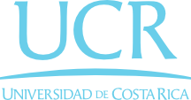

Este proyecto fue realizado por estudiantes de la Universidad de Costa Rica, específicamente de la carrera de Informática y Tecnología Multimedia, en conjunto con funcionarios del Parque Marino del Pacífico. El propósito de este sitio web es mostrar el trabajo que se realiza en el Parque a través de las historias de animales representativos como los son Romelia la tortuga, Homero el pelícano y Mario la tortuga. Además se pretende generar conciencia en cuanto a la importancia de los animales marinos y aves costeras.
